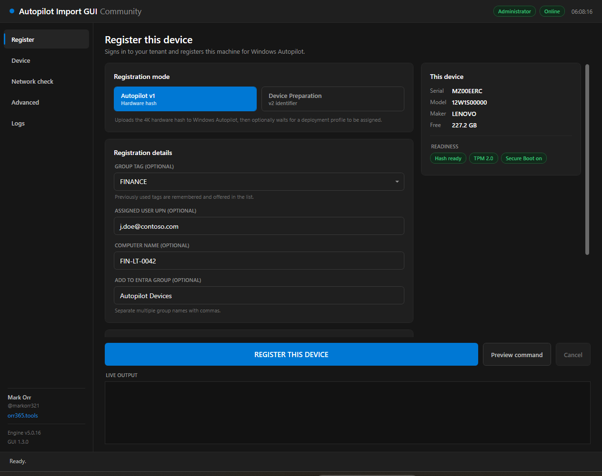
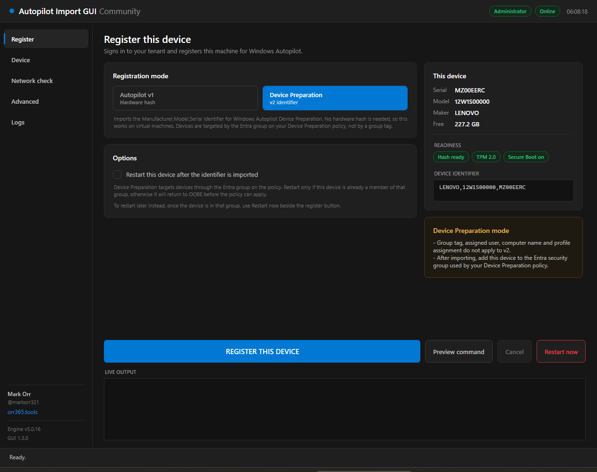
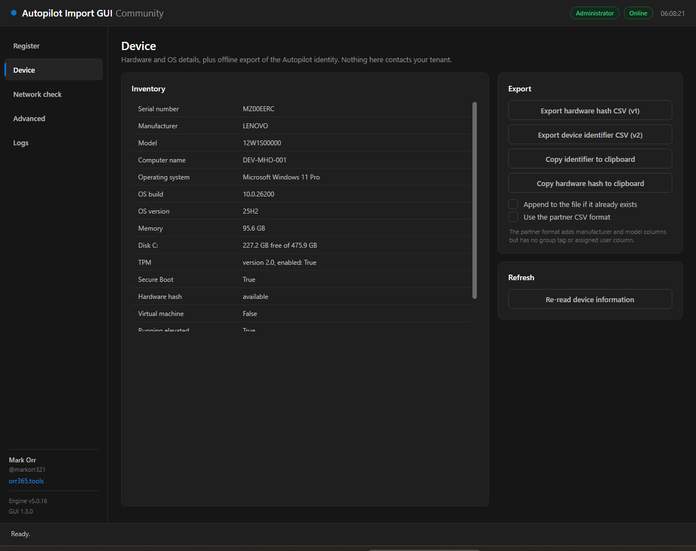
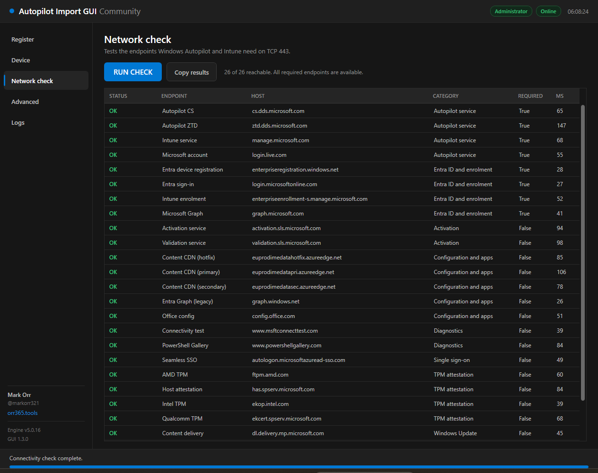
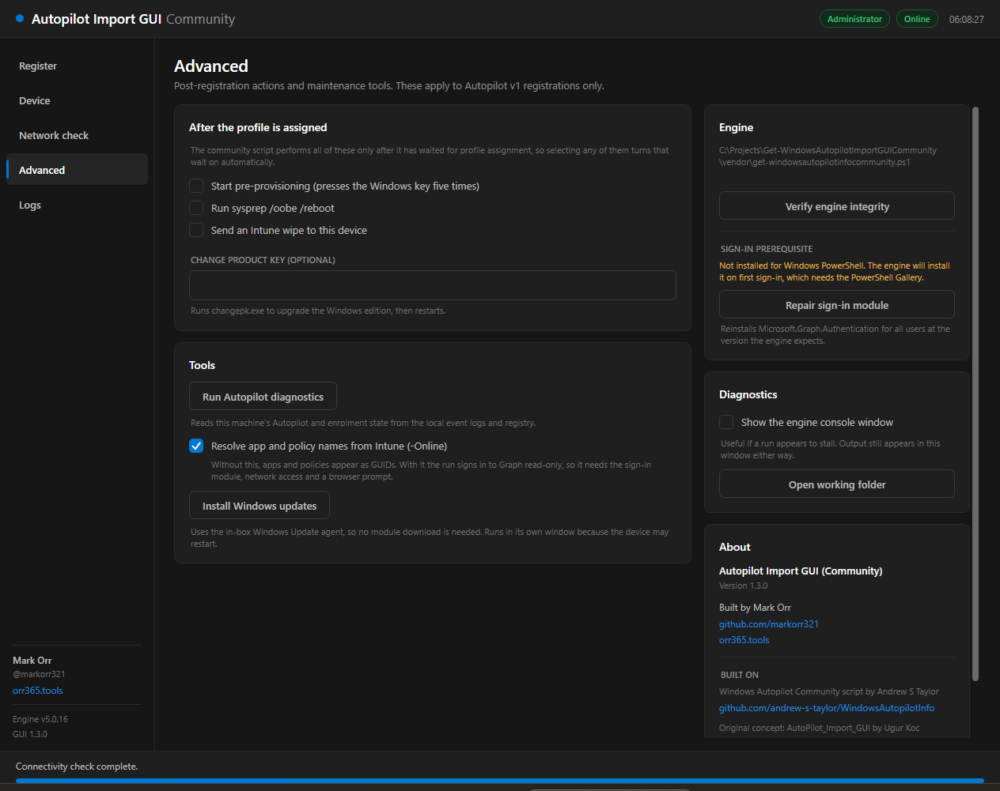
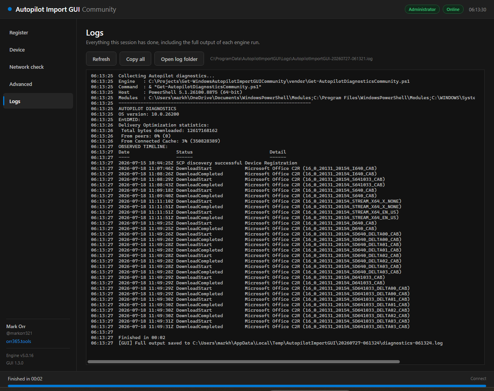

Register Windows devices with Autopilot from a window, not a console.
Autopilot v1 hardware hash and v2 Device Preparation identifiers — one self-contained PowerShell script that runs in OOBE.
v1.3.0 · Windows PowerShell 5.1A ground-up rewrite, built around what actually goes wrong at the OOBE screen.
A mode toggle that is not cosmetic — the hardware hash and Device Preparation paths are mutually exclusive in the engine, and the window reshapes itself for each.
Imports a Manufacturer,Model,Serial identifier — no hardware hash, so it works on virtual machines. Ships its own restart controls, because the engine cannot provide them on this path.
26 documented Autopilot, Intune, Entra, TPM attestation, activation and update endpoints probed concurrently in about 0.4 s. Failures sort to the top; required in red, optional in amber.
Engine output is streamed into the window with staged progress and a working cancel button, instead of being thrown at a separate console window you cannot see.
Update the group tag, delete and re-add, or assume new — chosen explicitly up front, so the engine never stalls on a hidden Read-Host prompt.
Hardware hash CSV, device identifier CSV, partner CSV format and clipboard copies — captured on the device without ever touching your tenant.
Reads this machine's ESP and enrolment state from local event logs and the registry. Optionally sign in read-only to resolve app, policy and script GUIDs into display names.
Renders the exact engine invocation without running anything — useful for verifying behaviour, and for lifting straight into your own automation.
Andrew Taylor's community script is vendored unmodified and embedded as base64 of its exact bytes, so its Authenticode signature survives. Verified at build time and again at runtime.
The two registration paths take different inputs and target devices differently.
Uploads the 4K hardware hash to windowsAutopilotDeviceIdentities.
Imports a Manufacturer,Model,Serial identifier to importedDeviceIdentities.
Restart only once the device is a member of the Entra group targeted by your Device Preparation policy — otherwise it returns to OOBE before the policy can apply. If the machine cannot produce a hardware hash, the tool defaults to v2 and says why.
The Register page — mode toggle, registration details, and live engine output.

Five pages, one window. Click any shot to enlarge.





Two commands from the PowerShell Gallery.
Installs to C:\Program Files\WindowsPowerShell\Scripts, which is already on PATH.
Everything is embedded in that one file — the window, the theme and the engine itself.
Run all of this in Windows PowerShell 5.1 (powershell.exe), not PowerShell 7 — the engine pins Microsoft.Graph.Authentication to 2.9.1 or lower. Launching from a PS7 terminal leaks its module path into child processes; the tool corrects for that, but 5.1 avoids the problem entirely.
All optional — they pre-fill the window, they do not bypass it.
| Parameter | Effect |
|---|---|
| -Mode v1|v2 | Pre-selects the registration mode: hardware hash, or Device Preparation identifier. |
| -GroupTag | Pre-fills the group tag field. Applies to v1 only. |
| -AssignedUser | Pre-fills the assigned user UPN. Applies to v1 only. |
| -NoElevate | Skips the automatic elevation prompt. The hardware hash cannot be read without administrator rights, so v1 will not work in this state. |
Short list, but each item is load-bearing.
Delegated scopes requested on first sign-in.
Standing on other people's work, and saying so.
Engine: get-windowsautopilotinfocommunity.ps1 and Get-AutopilotDiagnosticsCommunity.ps1 © Andrew S Taylor, MIT. Vendored unmodified — see vendor\VERSION.json for the pinned commit and checksums.
Original concept: AutoPilot_Import_GUI © 2023 Ugur Koc, MIT. This is a ground-up rewrite; no code from it is redistributed here.
The community script itself derives from Microsoft's Get-WindowsAutoPilotInfo by Michael Niehaus.